The eight screens we are building toward, each next to what the app actually renders today. The gap is the point of the page — this is a working document, not a portfolio.
Build screenshots refreshed 4 Sep 2026 — after the HIERARCHY PASS: five text tiers instead of two, one 44pt white focal number per screen (lime pulled off every value and left only where it means verified/active), labels dropped to 11pt muted caps, one gutter, and the new brand lockup in the header. Mechanics translated from a token-level audit of the TBG production app (focal:body 2.9×, dimming over sizing). Two see-and-fix rounds later the adversarial average is 61/100 (was 49): discover 72, setup 68, ranking 64, compare 61, records 62, shotdetail 58, shotmap 56, keeper 49. The keeper screen is last because its gap is the 3D render layer, which the fix lanes deliberately do not touch — it has its own workstream.
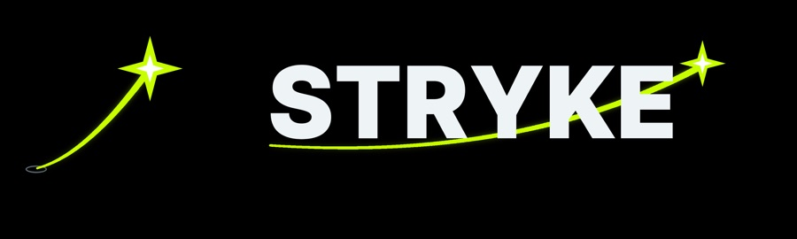
New brand lockup — the kit’s ballistic trail and impact star promoted to the mark, set in Pretendard Black
01The colour system
Five colours, and that is the whole palette. The most important rule here is the last one: amber is not decoration.
Lime#C8FF00
Cyan#55D9FF
Dark#0D141A
Grey#9AA7B0
Amber#F4C95D
Lime is the single brand accent — CTA fills, active tab, the live trajectory arc.
Cyan is functional, not decorative: 3D wireframe geometry, and the benchmark you are being compared against.
Amber marks low confidence only. If it ever appears because a screen needed a warm colour, that is a bug.
Typography: Pretendard for everything carrying language (including 한글), Inter Tight for numerals. Both are already loaded in the build, and the palette is already in theme.ts — that part of the kit landed.
02Screen by screen
Left is the target, right is the build. Where the right side is missing, the screen does not exist yet.
01 · Discover 디스커버46/100
Target
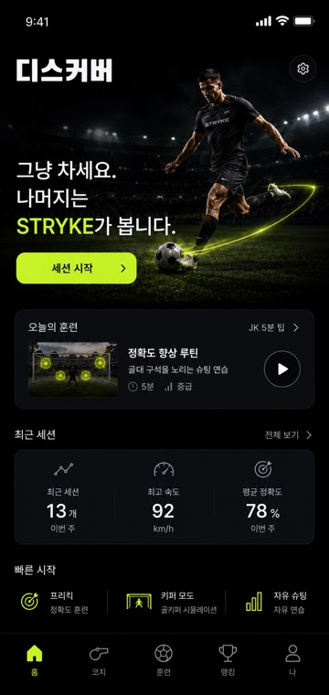
Build
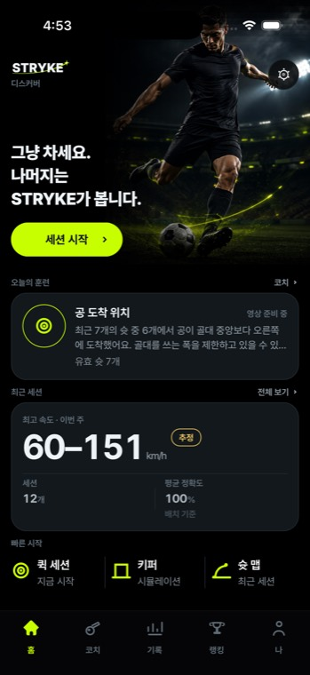
The measured session (5:17) sits far down the session list and never surfaces in 최근 세션, so the screen's own stats have nothing to point at.
The session list mixes 라이브 badges and em-dash placeholder speeds in with real measured rows — a reader cannot tell which is which at a glance.
02 · Setup 세팅62/100 — best
Target
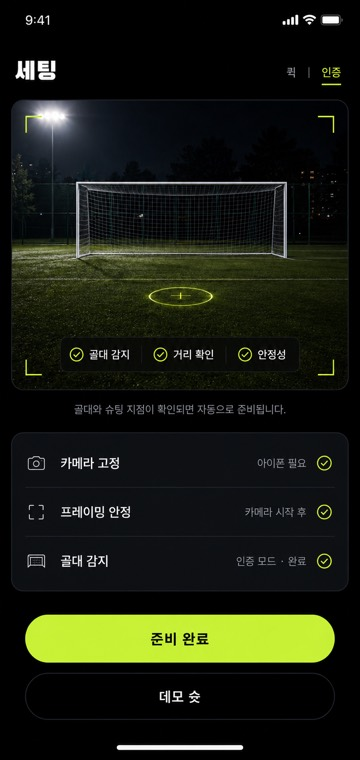
Build
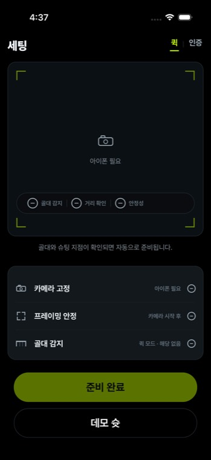
The target's readiness chips (골대 감지 · 거리 확인 · 안정성) are the honest core of this screen: each one is a real check, not a progress animation. They must never show a green tick for a check that has not run.
03 · Shot map 숏 맵52/100
Target
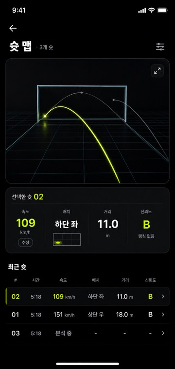
Build
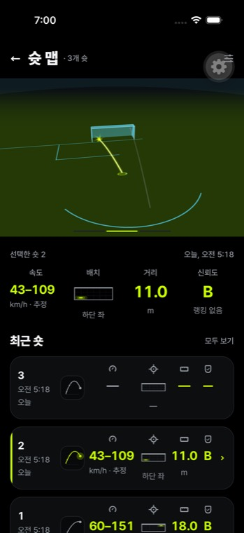
This mockup gets the honesty pattern right, and it should be copied to every other screen: the speed carries an 추정 chip, and the confidence grade reads 랭킹 없음. That is a number that admits what it is.
The 분석 중 row in the target matters too — a shot still being solved is a visible state, not an empty cell.
04 · Keeper replay 키퍼 리플레이34/100
Target
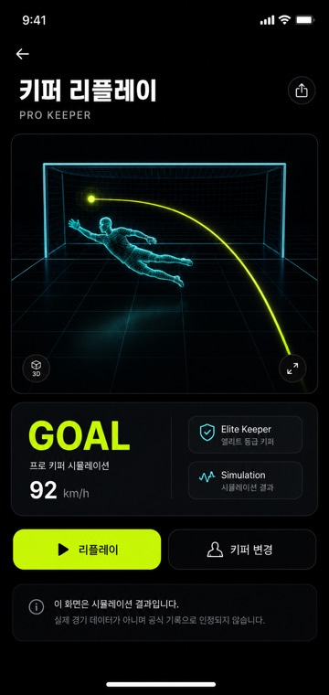
Build
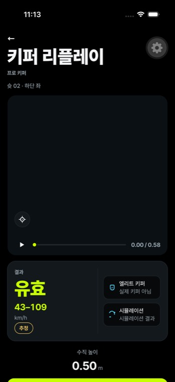
The simulation disclaimer card at the bottom of the target is load-bearing and must not be trimmed for space. We do not detect the real keeper at all, so every number on this screen describes a simulated one.
The build has no back control — the screen can only be left by an edge swipe.
05 · Records 기록42/100
Target
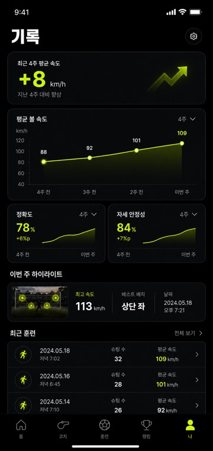
Build
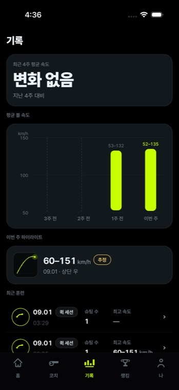
Built during the loop. Scored 42/100 — the structure is there, the density and hierarchy are not.
06 · Rankings 랭킹live · seeded
Target
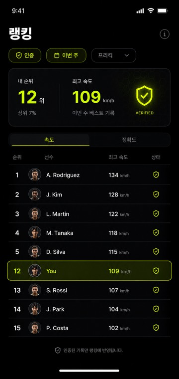
Build
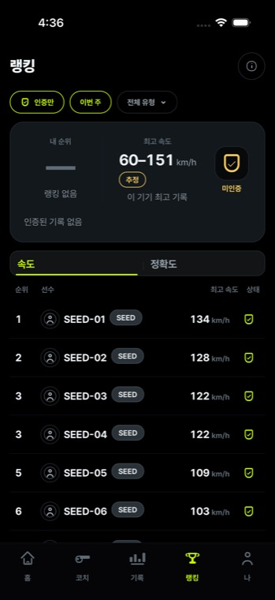
Now live against the real API. Nine seeded accounts, server tie-ranks rendered verbatim (1, 2, 3, 3, 5…), every seeded row carrying a visible SEED label plus a footnote, my-rank showing 랭킹 없음 rather than an invented place. An unreachable server renders 연결 없음 with retry — deliberately different copy from an empty board.
상위 7% is cut and stays cut. A percentile is a claim about a population; a rank is a fact about an ordered list.
The leaderboard is real, filled by seeded test accounts. Every seeded row is flagged in the API and must be visibly labelled in the UI — a demo entry that announces itself is a demo entry, the same row unlabelled is a fake record.
Only verified records enter, which the target already states in its own footer (인증된 기록만 랭킹에 반영됩니다). In the schema that is claim_point_speed — a refused or band-only shot cannot be ranked.
A user with no verified record has no rank at all, not last place.
07 · Shot detail 숏 0246/100
Target
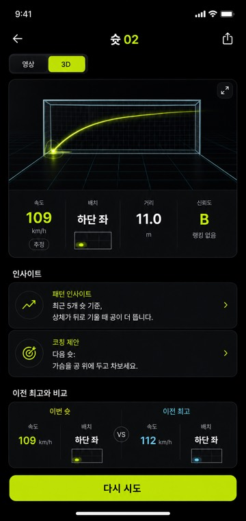
Build
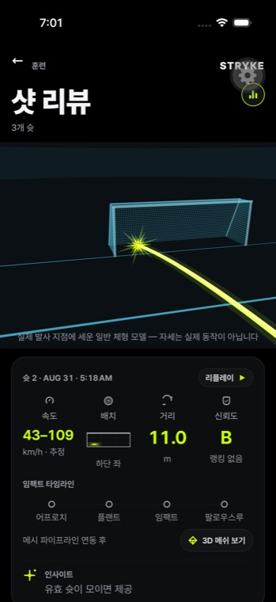
영상 / 3D toggle, the insight pair, and the 이전 최고와 비교 strip are the structure to match.
Same honesty pattern as the shot map — 추정 chip present, no ranking claimed.
08 · Compare 비교24/100 — weakest
Target
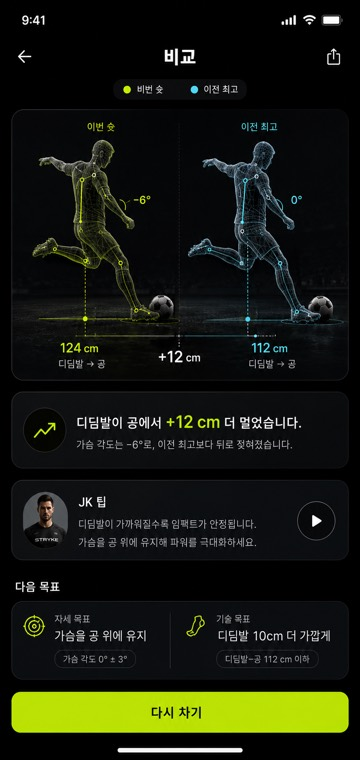
Build
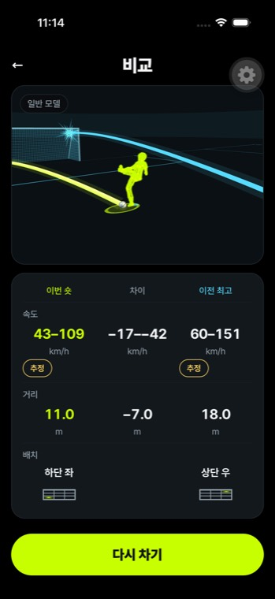
Built during the loop, and the weakest screen at 24/100 — the furthest from its target of any of the eight.
Lime versus cyan body mesh, plant-foot distance 124 vs 112 cm, chest angle −6° vs 0°. This is the clearest expression of the product's actual thesis: measure, compare, explain — and change one thing next time.
Every difference shown here must be traceable to a real measurement on both sides. A comparison against a pose we did not measure is not a comparison.
03What the design gets right that the code has to catch up to
The mockups already respect the measurement rulesScreens 03 and 07 pair the speed with an 추정 chip and 랭킹 없음; screen 04 carries an explicit simulation disclaimer; screen 06's footer restricts the leaderboard to verified records. None of that was imposed on the design after the fact — it is already in the drawings, and it is the pattern the rest of the app should copy.
Three things on the board cannot be built as drawn상위 7% — a percentile over a population we do not have. Cut.
A bare point speed — legal only when a metric reference is solved and the time base allows one. The component has to be able to render a band and an explicit refusal, or it will force a fabricated number the first time it meets a real clip.
A confidence meter that always reads high — legal only when driven by the solver's real refusal state. A decorative gauge is worse than no gauge.
04Honest status
Landed: the five-colour palette and both typefaces are in theme.ts. The kit's foundation is real.
Two screens do not exist at all — Records and Compare. A third, Rankings, is being built now with its API and seeded accounts.
All eight screens now exist. Records, Rankings and Compare were built during the loop; at round 1 they did not exist at all.
Existing is not matching. Three rounds, thirty agents, average 43/100, and no screen passed. Setup is closest at 62; Compare is furthest at 24. The loop ran out of rounds, not out of gaps.
One gap was refused on honesty grounds and stays refused: the JK 팁 card wants a photographed coach portrait. A generated face presented as a real coach is not shippable. The honest version is the same card geometry with a line icon, real tip copy, and the play button hidden until a real clip exists.